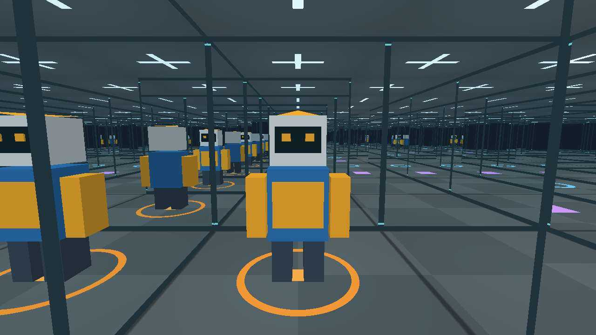

镜面导航评测
AI 能走出镜面迷宫吗？
理想轨迹是零撞墙通关。有一条记录撞墙 33,607 次，仍在规划预算耗尽时停在迷宫里。
视觉与纯文本对照 · 2026 年 11 月

评测任务
在镜面世界里执行三个动作
反射可能看起来像一条通道，也可能复制绿色目标。智能体需要走进真实目标格。一次规划可以提交多个动作，序列合法时，撞墙后还会继续执行后续动作。
左转旋转一个朝向前进尝试进入相邻格右转旋转一个朝向正方形每次转 90°，六边形每次转 60°。视觉协议返回每个动作后的第一视角画面和执行反馈。纯文本协议在试玩过程中只返回按顺序排列的动作结果。智能体看不到审阅地图。
| 难度 | 正方形 | 六边形 | 规划轮数上限 |
|---|---|---|---|
| 简单 | 边长 7 · 49 格 | 边长 5 · 61 格 | 200 |
| 中等 | 边长 11 · 121 格 | 边长 7 · 127 格 | 400 |
| 困难 | 边长 15 · 225 格 | 边长 9 · 217 格 | 800 |
每种形状和难度各使用两张固定地图，种子为 MIRROR-042 和 MIRROR-043。视觉观测为 1280 × 720，最多 10 次反射。原评测优先比较规划轮数，分析同时报告基础动作、实际撞墙和覆盖率。
视觉实验
视觉组的已完成结果
GPT-6.1 Sol + Codex 通过了全部四张简单图和两张困难正方形图。下表分母只包括可计分的结果。
视觉组共安排 64 题，另有 4 题按规则跳过、1 题撤回。Sol 的 4 条中等难度成功记录保留原始预算 500、500、200、200 轮，实际均在当前目标 400 轮以内完成。
| 模型 | 原生客户端 | 简单 | 中等 | 困难 |
|---|
主要发现
通关率只讲了一半
只看规划轮数，纯文本组通过更多。限制撞墙次数后，视觉组通过更多。动作轨迹、撞墙和覆盖率揭示了两组如何得到这些结果。
换一个预算，结果就会反转
32 组公开配对的地图、起始格、朝向和目标相同。13 对两组都通过，10 对只有纯文本通过，9 对两组都达到规划上限。
| 模型 | 视觉 | 纯文本 |
|---|---|---|
| GPT-6.1 Sol | 8/8 | 8/8 |
| Gemini 3.8 Flash | 3/8 | 7/8 |
| DeepSeek V4.1 Flash | 1/8 | 5/8 |
| Kimi K3.1 Pro | 1/8 | 3/8 |
| 合计 | 13/32 | 23/32 |
| 通关条件 | 视觉 | 纯文本 |
|---|---|---|
| 原规划轮数上限 | 13/32 | 23/32 |
| 最多撞墙 20 次 | 8/32 | 0/32 |
| 最多撞墙 50 次 | 11/32 | 2/32 |
| 最多执行 800 个动作 | 11/32 | 9/32 |
| 最多执行 1,600 个动作 | 13/32 | 15/32 |
额外预算是对已有轨迹的事后筛选，带着新预算重跑可能得到不同策略。部分配对的 DeepSeek 模型来源、AGY 版本和提示，以及 Sol 四条历史轨迹的声明预算存在差异。这是对两套完整系统的比较。
动作成本与撞墙行为
一轮规划可以包含大量试探
Gemini 3.8 Flash 在 Easy Square MIRROR-042 纯文本组用 9 轮、撞墙 268 次通关，视觉组为 116 轮、撞墙 40 次。Sol 两组均通关 8/8。在 Easy Hex MIRROR-042 上，视觉组用 315 个动作、零撞墙通关，纯文本组用了 8,846 个动作并撞墙 3,823 次。跨八张图，Sol 的撞墙中位数由纯文本的 889.5 次降至视觉的 12 次。
重撞发生在什么时候很重要
对模型自行选择试探的格子与朝向，Sol 的首次尝试撞墙率在视觉组为 9.1%，纯文本组为 56.7%。Gemini 分别为 28.8% 和 54.1%。两组自行选择了不同的试探位置。
如果撞墙后同批还有动作，下一动作立即重撞同一面墙的比例在纯文本组为 31.6%，视觉组为 21.8%。如果撞墙在一轮末尾，模型收到反馈后下一轮的首次前进重撞同一面的比例分别为 1.2% 和 4.5%。视觉组的 96 次重撞中有 94 次来自 DeepSeek。
当模型至少 21 轮后回到曾撞过的同一格、同一朝向时，纯文本组有 39.9% 的新计划以再次撞墙开始，视觉组为 3.9%。两组回访的位置和时机不同，记忆差异仍需要对照实验。
覆盖率揭示停滞与重复探索
Sol 在 Hard Hex MIRROR-043 上只撞墙 2 次，但最后 581 轮没找到新格子。DeepSeek 在 Medium Hex MIRROR-043 执行了 111,088 个动作、实际撞墙 33,607 次，仍只访问了 127 格中的 69 格。
重复图像是待验证的解释
DeepSeek 的视觉轨迹约有 4.9 万条图像投递记录，其中约 97% 重复，还有 744 轮裁剪了图像。重复走路会产生冗余画面。画面冗余是否进一步妨碍规划，需要控制图像历史后验证。
只靠撞墙反馈也能走出原始迷宫
固定沿墙策略只依靠前进成功或撞墙的反馈，就在原预算内通过 8/8 张无环地图。原始起点均朝向唯一开口。枚举所有初始朝向后，达标数为 36/40。完全不利用反馈的随机转向和前进基线，在 800 个动作内只通关 23/4,096。
每张地图增加 12 条通道后，固定沿墙策略在预算内的通过率降到 55.2%。记录相对位置的深度优先搜索仍为 98.0%。假定能完美识别局部墙面，原地图另有 31–153 次通道决策、零撞墙的算法参考线。
在 16 组同位置、同朝向的镜面和哑光画面对照中，部分封闭方向只在镜面图里出现了目标反光。模型试跑没有得到完整的成对判定，因此仍无法估计镜面增加了多少误判。
六边形的难度差距取决于协议
简单视觉组正方形通过 6/8，六边形通过 2/8。简单纯文本组两种形状都是 7/8。Sol 的困难视觉组通过两张正方形图，两张六边形图都达到上限，尽管两者格数分别为 225 和 217。转角、连通结构、渲染和具体地图都可能影响结果。
交互式回放
逐步查看原始轨迹
用上一步和下一步逐个查看基础动作、规划轮次或原始画面采样。可筛选下方的记录列表。视觉回放保留简单和中等难度轨迹，以及 Sol 的困难档轨迹。
实验记录
没有符合条件的记录。可以调整筛选，或清除筛选查看全部记录。
正在加载轨迹…
原生客户端也会改变结果
下表比较每个模型在同样四张简单视觉地图上的表现。Sol 在 Codex 下通过更多，DeepSeek 在直接 API 下通过更多，Kimi 的通过数相同。
| 模型 | 原生客户端 | 直接 API |
|---|---|---|
| GPT-6.1 Sol | 4/4 · Codex | 1/4 |
| DeepSeek V4.1 Flash | 1/4 · Claude Code | 2/4 |
| Kimi K3.1 Pro | 1/4 · Claude Code | 1/4 |
Sol 的三条失败 API 轨迹中，970 次撞墙有 868 次集中在最后一次规划。之前的轨迹常见反复转向或覆盖率停滞。提示、对话管理和推理状态保留都随系统而异。Gemini 的 API 对照和原生 Flash 使用不同模型。
中断的试验怎样计分
Flash 的四条困难档试验因上游额度通知中断，标记为未评测。两条 Gemini 4 Argon 简单档 API 试验仍暂停。这些试验、四条按规则跳过的试验和一条撤回记录均不计入已测分母。
查看与复现实验
可以下载成绩，观看 8 段逐关对比视频，或直接在浏览器试玩。公开回放包含动作和位置数据，实际撞墙与无效计划的惩罚分开统计。
引用项目 · BibTeX
@misc{kenny2026mirrormaze,
author = {kenny},
title = {{Mirror Maze}: A Benchmark for Reflective Navigation},
year = {2026},
url = {https://kennymckormick.github.io/blog/mirror-maze/}
}